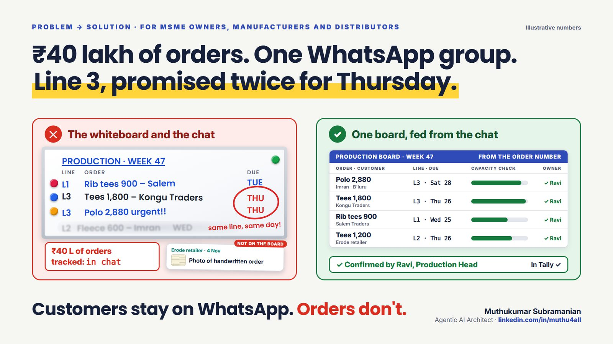
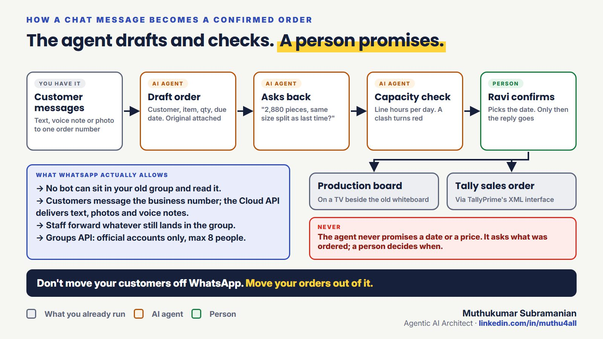
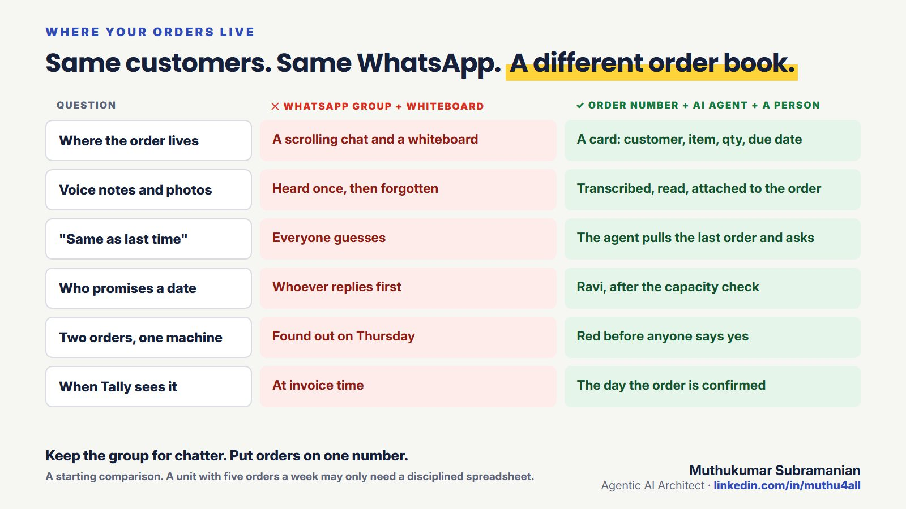

₹40 Lakh of Orders Live in One WhatsApp Group. Can an AI Agent Read Them?
By Muthukumar Subramanian · Agentic AI Architect

Monday, 7:40 AM, a knitwear unit in Tiruppur. Senthil, the owner, opens the WhatsApp group "SR Knits Orders": 214 unread.
A buyer's agent in Bengaluru has sent a 42-second voice note, half Tamil, half English: "Same as last time, but 20% more. Urgent!!" Senthil replies with a thumbs up and "Thursday, sir."
On the whiteboard by the cutting table, Ravi, the production head, has already given Line 3's Thursday to another order. And a photo of a handwritten order from a retailer in Erode, sent on 4 November, scrolled away three days later and never reached the whiteboard at all.
By Thursday, two buyers have been promised the same line, and a third doesn't know his order was never booked. Add it up and about ₹40 lakh of open orders are tracked in one place: the chat. (The unit, the people and every number here are illustrative. The pattern isn't.)
A WhatsApp group isn't an order book. It's a river. Orders float past, and nobody owns them.
The problem: the order book is a chat, a whiteboard and one man's memory
Ask any MSME owner in Tiruppur, Rajkot or Sivakasi. More than 9 crore enterprises are registered on the government's Udyam portals (9.16 crore as of 31 July 2026, per a Rajya Sabha reply), and Meta has said WhatsApp has more than 500 million users in India. For most small manufacturers, the order book is where those two numbers meet.
The order comes in on WhatsApp. The plan lives on a whiteboard. The real capacity rules live in the owner's head: "Line 2 never does fleece", "Monday mornings lose two hours to power cuts". Tally only sees the order when the invoice goes out.
Three things go wrong, every week:
→ Orders go missing. A photo, a voice note or a forwarded message scrolls away before anyone writes it down.
→ The same machine gets promised twice. Whoever replies first promises a date, without looking at the board.
→ "Same as last time" means different things to different people. Same colours? Same size split? Which "last time"?
On 9 November I wrote about a ₹12 lakh order that sat in an email inbox for nine days. Email at least leaves a record you can search. Chat orders scroll away, and nobody can search a voice note.
My view, and some of you will disagree: don't move your customers off WhatsApp. Move your orders out of it.

First, what WhatsApp actually allows
→ A bot can't quietly join your existing 60-member group and read it. Ordinary groups stay on people's phones.
→ The WhatsApp Business Platform (Meta's Cloud API) lets software receive what customers send to a business number. Text, photos and voice notes arrive as webhooks your system can process.
→ If you already use the WhatsApp Business app on that number, Meta's "coexistence" onboarding lets you connect the same number to the Cloud API and keep using the app.
→ Meta does have a Groups API, but it's for Official Business Accounts, works only on groups the business creates through the API, and caps each group at 8 participants. It won't rescue your old group.
So the honest design is simple: customers message one order number, and staff forward anything that still lands in the group. Keep the group for chatter. Export old chats once, for the catch-up.
The solution: a WhatsApp order desk with a person at the end
→ 1. One order number. Print it on the bill book and the challan.
→ 2. Every message becomes a draft order. The AI agent reads the text, transcribes the voice note, reads the handwritten photo, and fills a card: customer, item, quantity, due date, with the original message attached.
→ 3. It asks back in the chat when something's unclear. "Same as last time, 20% more" becomes "Last order was 2,400 navy polos, S to XL. So 2,880 pieces, same split?" The agent asks about what was ordered. It never offers a date.
→ 4. It checks capacity before anyone promises. The board knows each line's hours per day. If Line 3 is full on Thursday, the card turns red before Senthil types "Thursday, sir".
→ 5. A person confirms every order. Ravi taps Confirm and picks the date. Only then does the reply go to the customer. Nothing is promised automatically.
→ 6. Confirmed orders go to the board and into Tally. TallyPrime can take data in through its XML interface, so the sales order exists the day it's confirmed, not at invoice time.
The whiteboard can stay. Hang a TV beside it showing the digital board.
Let the chat stay messy. Keep the order book clean.

👉 [GIF: B-day21-4-in-article-chat-to-board.gif]
Caption: A text, a photo and a voice note become order cards on the week's machine board. One clashes with Line 3; the question goes back to the customer only after Ravi approves. All details illustrative.
Who builds it, and who runs it
The first week isn't coding. It's a forward deployed engineer (FDE), an engineer who works inside the customer's business and ships on their real systems, sitting on the factory floor. They learn why Line 2 never does fleece and how Ravi really counts capacity. The agent needs exactly that, and none of it is written down.
After go-live, someone has to own the agent's behaviour: what it may ask customers, what counts as an order, and a weekly look at what it got wrong. Some firms call that role an AI Agent Manager. In a 120-person unit, it's often the office manager, plus an hour a week from the owner. The titles are still settling. The job isn't new.
The hard parts
→ Voice notes are messy. Mixed Tamil and English over machine noise, and "fifteen" heard as "fifty". The agent should read numbers back and ask, never guess.
→ The real rules live in the owner's head. If the FDE doesn't get them out, the capacity check will be confidently wrong.
→ Habits are sticky. Some buyers will keep posting in the group. Forwarding has to be a routine, not a favour.
→ Consent and data. Process only messages sent to your own business number, tell customers an assistant reads them, and handle personal data under the DPDP Act. Never scrape staff phones.
→ It isn't free. API messages, speech models and setup all cost money. A unit with five orders a week may only need a disciplined spreadsheet.
The opportunity
→ For MSME owners: this week, count the orders that exist only in chat and put a rupee figure on them. That's the size of your risk.
→ For distributors: the same desk handles repeat orders from 300 retailers who'll never log in to a portal.
→ For IT firms and founders: WhatsApp-to-Tally order desks built for one cluster at a time: Tiruppur knitwear, Rajkot pumps and castings, Sivakasi printing. Sell through industry associations, with an FDE week in every deal and a monthly fee after it.
Tools worth trying: Meta's WhatsApp Cloud API; speech-to-text from OpenAI Whisper, Google Gemini or Sarvam AI for Indian languages; Claude, Gemini, GPT or open models on AWS Bedrock to turn messages into order cards; LangGraph to keep a person in the confirm step; and TallyPrime's XML interface for the sales order.
Your turn 👇
Where does your order book really live: WhatsApp, Excel or the ERP? One word.
Tag the owner who still runs the whole factory from his phone.